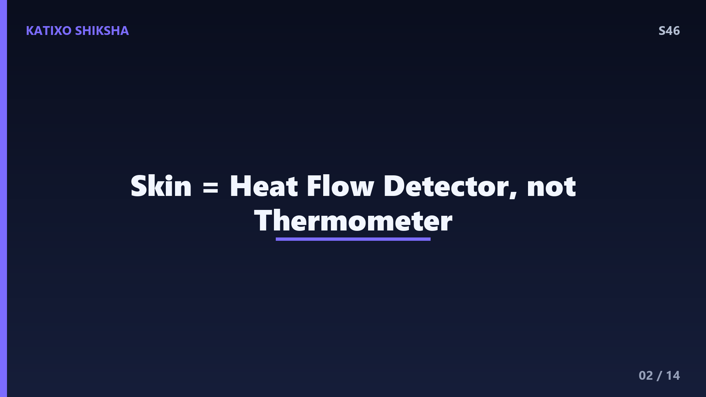
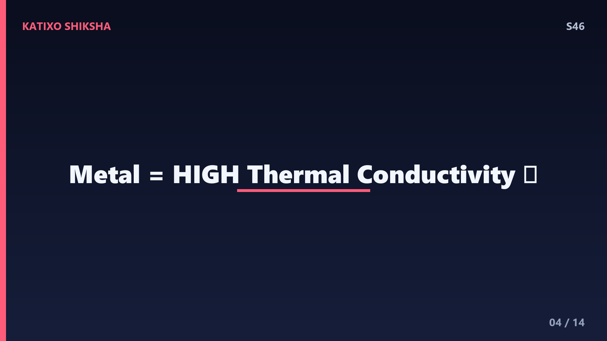
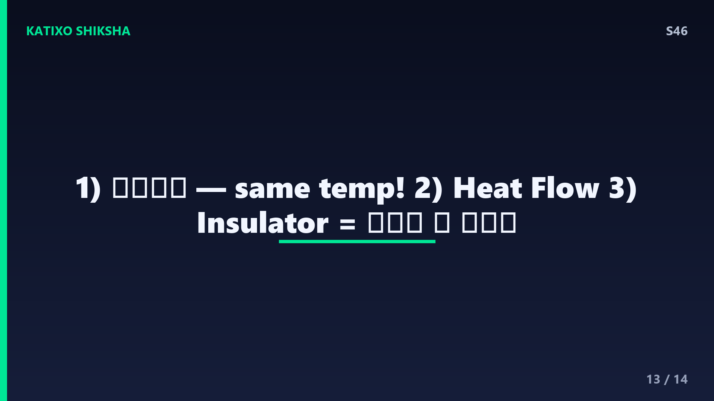

S46 — Metal ठंडा क्यों लगता है, लकड़ी नहीं?
Slide 1दोस्तों, सोचो एक चीज़! सर्दियों की सुबह तुम एक लकड़ी की कुर्सी और एक लोहे की कुर्सी छूते हो। दोनों एक ही कमरे में रखी हैं, फिर भी metal वाली बर्फ जैसी ठंडी और लकड़ी वाली नॉर्मल लगती है। क्यों? दोनों का temperature तो same है! तो metal ज़्यादा ठंडा कैसे? आज Katixo Shiksha पर हम इसी मज़ेदार रहस्य को खोलेंगे। सच ये है कि metal असल में ठंडा होता ही नहीं, तुम्हारा दिमाग एक प्यारा सा धोखा खा रहा है। चलो समझते हैं असली science!

Slide 2सबसे पहले एक बड़ी गलतफहमी दूर करते हैं। हमें लगता है कि हमारी skin ठंडक को नापती है, यानी temperature को। पर असल में ऐसा नहीं है! तुम्हारी skin temperature नहीं नापती, वो heat flow नापती है, यानी गर्मी कितनी तेज़ी से तुम्हारे शरीर से बाहर जा रही है। जब गर्मी तेज़ी से निकलती है, दिमाग कहता है ठंडा! और जब धीरे निकलती है, दिमाग कहता है गरम। तो असली खेल heat के बहाव का है, चीज़ के temperature का नहीं। ये point याद रखना, पूरी कहानी इसी पर टिकी है।
Slide 3अब एक ज़रूरी बात। तुम्हारे शरीर का temperature करीब 37 degree Celsius होता है। कमरे में रखी metal और wood दोनों का temperature मान लो 25 degree है। मतलब तुम दोनों से गरम हो! इसलिए जब तुम कुछ छूते हो, गर्मी हमेशा तुम्हारे हाथ से उस चीज़ की तरफ जाती है, क्योंकि heat हमेशा गरम से ठंडे की तरफ बहती है। तो असली सवाल ये है कि कौन सी चीज़ तुम्हारे हाथ से गर्मी ज़्यादा तेज़ी से चूस लेती है। और यहीं metal और wood में फर्क आता है।

Slide 4यहाँ entry होती है हीरो की, जिसका नाम है thermal conductivity, यानी गर्मी को पास करने की रफ्तार। Metal इसमें चैंपियन है। लोहे जैसी धातु में electrons आज़ादी से घूमते हैं और गर्मी को बिजली की तरह फटाफट आगे पहुँचाते हैं। इसीलिए metal की thermal conductivity बहुत ऊँची होती है। मतलब जैसे ही तुम metal छूते हो, वो तुम्हारे हाथ की गर्मी तुरंत खींचकर अंदर तक फैला देता है। गर्मी का ये तेज़ बहाव ही तुम्हारी skin को signal देता है, और दिमाग चिल्लाता है, बाप रे, ये तो ठंडा है!
Slide 5अब बारी लकड़ी की। Wood एक insulator है, यानी गर्मी को रोकने वाला। इसमें electrons आज़ाद नहीं घूमते, और अंदर बहुत सारी हवा की छोटी छोटी जेबें फंसी होती हैं। हवा गर्मी को बहुत बुरी तरह पास करती है। इसलिए जब तुम wood छूते हो, वो तुम्हारे हाथ की गर्मी बहुत धीरे धीरे लेता है। गर्मी हाथ के पास ही ठहरी रहती है, इसलिए हाथ की त्वचा ठंडी नहीं होती। दिमाग को heat flow धीमा मिलता है, और वो कहता है, अरे ये तो आरामदायक है, गरम सा। जबकि wood भी उतना ही ठंडा था जितना metal!
Slide 6एक मज़ेदार example से पक्का करते हैं। Metal की thermal conductivity करीब 50 से 400 watt per meter kelvin होती है, जबकि wood की सिर्फ 0.1 से 0.2 के आसपास। यानी metal लकड़ी से सैकड़ों, कभी हज़ार गुना तेज़ी से गर्मी पास करता है! अब समझ आया? यही वजह है कि लोहे की रेलिंग बर्फ जैसी लगती है पर बगल का लकड़ी का दरवाज़ा normal। दोनों एक ही ठंडी हवा में रात भर रहे, temperature बराबर, पर तुम्हारा हाथ इस conductivity के फर्क को ठंडक के तौर पर महसूस करता है।
Slide 7अब उल्टा case भी देखो, गर्मियों में! धूप में रखी metal की कार की सीट और लकड़ी की बेंच, दोनों मान लो 50 degree तक गरम हो गईं। अब तुम बैठते हो तो metal वाली सीट जलाने वाली लगती है, पर लकड़ी इतनी नहीं। क्यों? वही conductivity! अब चीज़ें तुमसे गरम हैं, तो गर्मी उनसे तुम्हारी तरफ बहती है। Metal तेज़ी से अपनी गर्मी तुम्हारे हाथ में डालता है, इसलिए ज़्यादा गरम लगता है। तो metal सर्दी में ज़्यादा ठंडा और गर्मी में ज़्यादा गरम, दोनों में चैंपियन है, क्योंकि वो तेज़ heat conductor है।
Slide 8एक और कमाल का सबूत, ऊन का कंबल! कंबल खुद गर्मी पैदा नहीं करता, ये गलतफहमी है। कंबल बस एक बढ़िया insulator है, बिल्कुल wood की तरह। इसमें हवा फंसी होती है, जो तुम्हारे शरीर की गर्मी को बाहर भागने से रोकती है। तो गर्मी तुम्हारे पास ही रुकी रहती है और तुम गरम महसूस करते हो। यानी जो चीज़ गर्मी को धीरे पास करती है, वो छूने पर गरम और आरामदायक लगती है, और जो तेज़ पास करती है वो ठंडी लगती है। पूरी कहानी सिर्फ heat के बहाव की रफ्तार की है, दोस्तों!
Slide 9एक मस्त घरेलू experiment। एक चम्मच धातु का और एक चम्मच लकड़ी या प्लास्टिक का, दोनों को कुछ घंटे एक ही जगह रख दो। अब आँख बंद करके दोनों को गाल से छुआओ। धातु वाला तुरंत ठंडा लगेगा, लकड़ी वाला normal, जबकि thermometer से नापोगे तो दोनों का temperature बिल्कुल बराबर निकलेगा! ये साबित करता है कि तुम्हारी skin एक temperature meter नहीं, बल्कि एक heat flow detector है। यही चीज़ engineers बर्तन के हैंडल बनाते वक्त इस्तेमाल करते हैं, हैंडल wood या plastic का ताकि गर्मी हाथ तक न पहुँचे।
Slide 10तो इसका फायदा कहाँ है? सोचो, गरम कढ़ाई का हैंडल अगर पूरा metal का हो तो हाथ जल जाए, इसलिए उस पर plastic या wood लगाते हैं, जो insulator है। ठंडे इलाकों में लोग lakdi के फर्श और दरवाज़े पसंद करते हैं ताकि पैर और हाथ ठंडे न लगें। वहीं cooling के लिए, जैसे computer के heat sink में, metal इस्तेमाल होता है ताकि गर्मी तेज़ी से बाहर निकल जाए। यानी कब insulator चाहिए और कब conductor, ये समझना engineering का असली कमाल है, और तुम अब ये समझ गए!
Slide 11एक छोटी सी बात और, हमारी skin पर मौजूद नमी और हवा भी इसमें थोड़ा रोल करती है, पर मुख्य खिलाड़ी thermal conductivity ही है। चलो अब सब कुछ एक लाइन में बाँधते हैं। Metal और wood एक ही temperature पर हैं, पर metal तुम्हारे हाथ से गर्मी बहुत तेज़ी से खींचता है, इसलिए ठंडा महसूस होता है। Wood गर्मी धीरे खींचता है, इसलिए गरम सा लगता है। तुम्हारी skin temperature नहीं, heat flow महसूस करती है। बस यही पूरी science है, simple और सुंदर!
Slide 12अब time है Quick brain check! तीन सवाल, ज़रा सोचकर बताना। पहला, क्या metal सच में wood से ज़्यादा ठंडा होता है, हाँ या नहीं? दूसरा, हमारी skin असल में क्या नापती है, temperature या heat flow? और तीसरा, बर्तन के हैंडल plastic या wood के क्यों बनाते हैं? Video को यहीं pause करो, थोड़ा दिमाग दौड़ाओ, और अपने जवाब मन में या copy में लिख लो। तैयार? चलो अगली slide पर answers देखते हैं!

Slide 13चलो जवाब मिलाते हैं! पहला, नहीं! Metal और wood एक ही temperature पर बराबर ठंडे होते हैं, metal सिर्फ ठंडा महसूस होता है क्योंकि वो गर्मी तेज़ी से खींचता है। दूसरा, हमारी skin temperature नहीं बल्कि heat flow नापती है, यानी गर्मी कितनी तेज़ी से बह रही है। और तीसरा, हैंडल plastic या wood के बनाते हैं क्योंकि ये insulator हैं और गर्मी को हाथ तक नहीं पहुँचने देते, ताकि हाथ न जले। अगर तीनों सही हुए, तो शाबाश, तुम तो असली science detective बन गए!
Slide 14तो दोस्तों, आज हमने सीखा कि metal ठंडा होता नहीं, बस तेज़ी से गर्मी चूसकर ठंडा महसूस कराता है, और इसका हीरो है thermal conductivity। हमारी skin एक heat flow detector है, temperature meter नहीं। अगली बार लोहे की रेलिंग छूना और इस science को याद करना! अगले episode में हम जानेंगे एक और मज़ेदार राज़, हमें echo यानी गूँज क्यों सुनाई देती है? बहुत दिलचस्प होने वाला है। अगर आज कुछ नया सीखा तो Katixo Shiksha को Subscribe करना मत भूलना! मिलते हैं अगले video में, Bye!